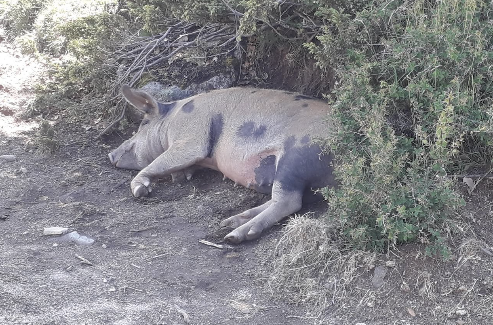

Day two
I was awakened by the footsteps of the first hikers passing the workshop early in the morning, shortly after six o'clock. I took a deep breath and was pleasantly surprised to find that my sense of smell had become so dulled that I could barely notice the strong odor of paint that had bothered me the night before. After a few gulps of water and a long stretch while still lying on my mattress, I finally stood up and packed my belongings. Slipping quietly back outside, I looked up at the Aiguilles de Bavella now bathed in the golden light of the rising sun. Even at that early hour, and despite the altitude, the warmth was already beginning to build. This was only my second day in Corsica and my body had not yet fully adapted to the heat – or at least this is what I thought. Eager to tackle the climb while the air was still cool, I dampened my clothes and filled my water flasks at the nearby fountain. Then I shouldered my rucksack and set off toward the pass. Leaving the still slumbering village of Bavella behind, I soon reached the junction where the trail split in two. I could either continue through the forest, walking around the granite spires or climb directly towards them and reach the summit. The choice was obvious. I was curious to discover what view awaited me at the top while I already had an idea of how the valley looked below. Furthermore, I was looking for a challenge that morning, my body and mind fully rested. After all, I had come to Corsica and the GR 20 for its rugged mountains.
The cool shade of the pine forest disappeared as soon as I climbed up. Exposed to the morning sun, I soon began to sweat as the water I had soaked into my bandana and T-shirt at the fountain already evaporated. It didn't matter. Excited to press on and carrying nothing more than my well-packed thirty-liter rucksack, I even found myself running several sections of the narrow path. As a trail runner, moving quickly over rough ground felt perfectly natural. It didn't take long before I reached the summit and I soon began descending on the other side. The trail down was far more technical and one section even had a rope installed for extra safety. I waited patiently behind another group of hikers who were also heading north. They were carefully making their way down and took great care not to make a faux pas. They did, however, sense that I wanted to overtake them, as I walked behind them with an exaggerated lightness, betraying both my ease on the terrain and my urge to press forward. One of the hikers remarked, “Looks like someone is trying to finish the GR20 in seven days.” I simply grinned and replied that I just felt like moving a little faster that morning, for the real reason would take too long to explain. It is surprisingly difficult to tell someone that this is simply the pace at which I feel most comfortable. Walking more slowly would not make the hike more enjoyable; on the contrary, it would make me feel less connected. When the trail becomes narrow and rocky, my attention becomes focused. Every step demands precision, and at that pace my body and mind seem to work as one. There is no room for distraction, no wandering thoughts – only the next foothold, the next turn, the next movement. I do like reflecting during hiking, but on a technical trail I take greater joy in being one with act itself. It has a way of silencing the mind. It replaces thought with instinct, and that complete immersion in the present is one of the reasons I love mountain trails. My natural rhythm therefore simply happens to be faster than that of most hikers. And while I was pressing on, a landscape of gentle, rounded hills, dense forests of Corsican pine, chestnut and cork oaks, with patches of open grasslands unfolded on the other side of the mountain ridge. It was obvious why the southern section of the GR20 was less demaning compared to its northern counterpart. The scenery changes dramatically above the small town of Vizzavona, as the route traverses steep mountains and crosses the high alpine terrain surrounding Monte Cinto, Corsica’s highest peak with an altitude of 2706 meters.
Descending towards the valley, I arrived once more at the junction where hikers could either follow the trail through the valley or take the more challenging route over the summit - the path I had just taken. A couple stood there, hesitating. Seeing me coming down, they asked how long it had taken me. I replied that it had not taken me very long, but quickly added that they should not use my time as a reference for their own hike, pointing at my 30-liter bag. After walking through the valley covered by dense forest, I soon I reached the refuge of Asinau after a short climb up. Grassland dominated here once more. I ordered a simple Café long and exchanged a few words with a group of hikers. Having now completed a part of the GR20 myself, I could answer their questions concerning the final section down to Conca - as most hikers do the GR20 the opposite way. I was glad to be of some help and enjoyed our talk. Once they left, silence settled over the refuge. I remained seated for a while, enjoying the view and the tranquility of the moment, interrupted only by the occasional clatter of dishes as one of the young staff members cleaned the terrace and kitchen. At the same time, my eyes kept returning to the steep mountainside that awaited me, the Crêtes de Concatellu leading to the Monte Alcudina. After a few deep breaths, I hoisted my rucksack once more onto my shoulders and stepped back into the sun. Walking up, I soon realized that I had little interest in following the long series of switchbacks zigzagging up the mountain. The slope consisted largely of solid, coarse-grained granatic rock and offered an excellent grip. Instead of following the trail, I found myself scrambling directly uphill, using both my hands and feet. I'll admit, to me this was certainly the best part of the day. Sweat poured from my face and only my lungs dictated my breakneck pace. I did wonder what the other hikers thought as they watched me alternate between running upright and scrambling on all fours. I was acting like a child, or so it seemed at least. I reached the ridge far sooner than expected. Here too, there was an alternative to the main route, following the Crêtes de la Foce Aperta instead of descending straight down towards the Plateau du Coscione which was also marked by gentle hills and occasional pine forests. Unfortunately, it became obvious that the path was in a poor condition and with only a paper map to guide me, I did find myself in the situation of trying to reach the main route again. I attempted to join it via roads passing several small farms, where pigs were the sole inhabitants at that hour and who rested quietly in the sparse shade of scattered trees. None of them seemed particularly interested in my presence. They neither approached nor fled, but simply continued lounging where they were, apparently accustomed to passing hikers. Having already eaten my fair share of Corsican saucisson since arriving on the island, I could not help wondering whether their diet and seemingly carefree existence contributed to the flavour of the cured meat I had savored.

Unsure whether I was heading in the right direction, I felt relieved when I heard the sound of a small pickup truck approaching from behind. I signaled to the driver to stop, making clear that I needed some help. With a smile, he assured me that I was only a short distance from the main track and added that I was not the first hiker to lose the trail in this area. Sure enough, I rejoined the route only a few minutes later.
By midday I arrived at the Refuge of Matalza. The place was crowded with hikers taking an early lunch, but since I was not hungry, I simply refilled my water flasks and carried on. The trail had become a rocky road which was gentle and easy, allowing for a steady rhythm. I stopped briefly above the Bergerie of Basseta, where meat sizzled on the grill and groups of hikers rested. I had no desire to halt, yet I found myself imagining how different the moment might have felt had I been sharing the journey with someone else. I could easily picture us sitting together with a plate of grilled meat, chatting with the hosts before stretching out on the surprisingly lush grass for a short afternoon nap. Being on my own, I shouldered my pack instead and carried on. The road gradually narrowed into a winding mountain path that crossed countless streams. Crystal-clear water flowed through smooth granite channels, forming small turquoise pools and the occasional waterfall. Here too, I imagined that, had I been hiking with someone else, we would almost certainly have stopped for a dip in the water. Alone, however, my curiosity kept pulling me onward. I wanted to see what lay around the next bend far more than I wanted to linger where I was. Thick clouds lay ahead as I hiked up along the edge of Monte Fromicola, and I soon disappeared into the mist, leaving the valley bathed in sunshine behind me. The temperatures quickly dropped and once I reached the Refuge of Usciolu, I was forced to put on my merino shirt. Having only occasionally eaten peanuts while walking, and now that it was late afternoon, I finally felt ready for a proper meal. There was a room filled with tables and which was crammed with other hikers. Many appeared to be tired, and it was apparent that this was their last stop of the day, with many staying in tents and a few in the refuge's wooden bunk beds. There was a simple camping stove with a full gas bottle. I left my bag and went to find the épicerie, as many refuges happened to have one. I was lucky. In a simple shack surrounded by tents close to the main building, supplies such as canned food, peanuts, and beverages could be purchased. I bought an Orangina, a beer, a big can of ravioli and some packs of peanuts, as those remained my basic ration in case I lacked food. After washing a dirty pot which seemed encrusted for an eternity, I finally warmed up my ravioli and enjoyed my first warm meal on the island. The air was surprisingly cold, and I was forced to wear my windbreaker to add some additional warmth. However, I soon felt toasty thanks to my canned grub and was prepared to move on, not wanting to stay in this crowded place. I happened to exchange a few words with the mother of two children while enjoying my raviolis. She asked me if I already had a place for the night at the refuge. I told her that I did not intend to stay, at which point she briefly hesitated before adding that I should be careful, as the rocks were wet and slippery and visibility was limited due to the thick mist. She told me how they had got lost somewhere along the ridge and were lucky to find the path again after an exhaustive search. I thanked her for her warning and kind advice, finished my meal and, after cleaning the pot, resumed my journey. She was right; the mist was thick up here. After only a few steps, the refuge disappeared completely from my sight, with only distant voices filling the air. I was walking slightly slower, wanting to make sure that I did not miss any signs along the way. Passing from one side of the ridge to the other was the most gruelling part of this section, often losing sight of the rocky path, whose existence was only noticeable by the recurrent white and red horizontal stripes. Finally, it descended in a gentle zigzag, and at last the mist disappeared, remaining behind as a fine blanket over the mountain. I met no more than three hikers along the trail and, with the sunset now imminent, I slowly began to think about where to spend the night.

It was at the cross section at Col de Lapato where I decided to end the day for it is where another great hike, less known than the GR20, crosses paths with it. The sun had just vanished to the west, and I could spot one of Corsica’s many villages to the north, perched on the mountain's southern edge. This other route, the so-called Mare a Mare (Sea to Sea) immerses trekkers to Corsica’s way of living and well-known gastronomy - unlike the GR20, which remains high in the mountains to expose you to the raw, wild nature of the island. I looked at my map and considered the alternative, as I did not necessarily need to complete the GR20. All I wanted was a glimpse into what Corsica is in all its facets, and I felt like I was missing just that: experiencing the other half of the island. It was only my first full day on the GR20, and already I had thoughts of leaving it. I knew it was silly, so I simply took the time to examine my thoughts and emotions, distancing myself from them as they passed. Finally, I settled on putting up my tent near this trail junction so I could decide tomorrow, when my mind had enjoyed some well-deserved rest.
After a final peanut snack and a beer, while the sky was slowly filling with the night’s stars, I pitched my tent, puffed up my mattress and unfolded my sleeping bag on a dry, earthy patch of flat ground. In the absence of light, I eventually started to feel drowsy. I quickly washed my armpits, careful not to waste any water, as I knew the next source was some distance away. I leaned back in the tent and felt safe inside, for a strong wind blew along the ridge. Yet, I was wrong to believe so. Soon, condensation built up inside and drops began dripping down on me. Now filled with complete lassitude, I did not hesitate and cut the fabric wide open. With the wind now blowing forcefully through it, I took out my safety blanket and wrapped it around my sleeping bag. It was not ideal, as I now felt too warm. Hence, I accepted my fate and with the wind still warm, hoped things would settle. Looking at the sky and witnessing a few shooting stars among the armada of satellites, I fell asleep. I only hoped that no hiker would find me the next morning with my tent cut wide open, plainly revealing its complete futility to anyone passing by.